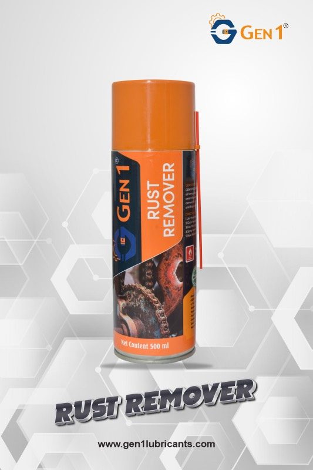
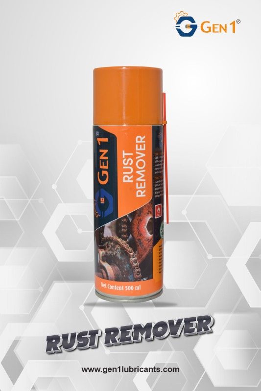

Rust Remover Spray
PACK SIZE: 100ml / 500ml
GEN1 Rust Remover Spray is a versatile, high-performance solution designed to protect and maintain automotive, industrial, and small machinery components, including power tools, against rust and corrosion. Its advanced light-oil formulation not only penetrates and loosens surface rust but also displaces moisture to prevent further oxidation.
protective film over treated surfaces, it provides long-lasting corrosion resistance while ensuring smooth operation of moving parts. Suitable for a wide range of applications, GEN1 Rust Remover Spray enhances the longevity, reliability, and functional efficiency of metal components in harsh or moisture-prone environments.
How To Use
To use GEN1 Rust Remover Spray, ensure the surface or component to be treated is clean and free from loose debris. Shake the can well and spray a thin, even layer directly onto the affected area, allowing the formulation to penetrate and loosen rust while displacing moisture. For heavily corroded surfaces, allow the product to sit for a few minutes, then wipe or brush away loosened rust and residues. Reapply if necessary to ensure complete protection, and allow the treated surface to form a thin protective film that guards against further corrosion and facilitates smooth operation of moving parts.
Advantages
GEN1 Rust Remover Spray offers rapid and effective removal of rust while simultaneously displacing moisture to prevent further corrosion. Its light-oil formulation forms a protective film over treated surfaces, reducing friction and wear on moving parts. The spray is versatile, suitable for automotive, industrial, and small machinery applications, and helps extend the service life of components by maintaining metal integrity, improving reliability, and ensuring smooth, long-lasting operation even in moisture-prone or harsh environments.